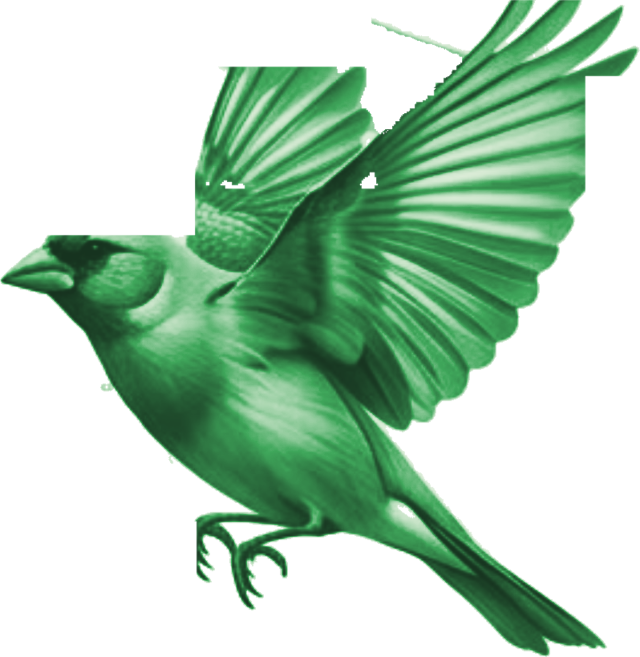

أخف أثرًا على الأرض، أبقى أثرًا في الناس.
تدار البيئة عندنا كما يدار حساب الضمان: التزام يكتب، وعداد يقرأ، وحساب يراجع. لا نتزين بأرقام لا نملك إثباتها؛ ننشر ما نقيسه، ونسمي ما لم نبلغه بعد عجزًا لا إنجازًا مؤجلًا.
Our footprint, measured live from this very page — commitments run like escrow: written, metered, audited.
هذه الصفحة تزن {{ mb }} ميغابايت
يجمع العداد حجم ما نقله متصفحك فعلًا لهذه الصفحة، ويقدر انبعاثها وفق نموذج التصميم الرقمي المستدام SWDM v4 بافتراضاته المنشورة (٠٫٨١ ك.و.س/غ.ب و٤٩٤ غ/ك.و.س). تقدير لا قياس مختبري — وننشره لأن الشفافية أنفع من الكمال.
ست سياسات، لا ست أمنيات.
{{ c.x }}
نعمل على خط الأولويات الكبرى.
نموذج كيان — تحقق فعمل مضمون فدخل يصل أهله — يخدم بطبيعته أهداف التنمية المستدامة السبعة عشر في مواضع بعينها، ويوائم أولويات التعافي الوطنية وجهود شركاء الاستقرار في سبل العيش ومكافحة الفقر. ولا يدرج شريك أو برنامج هنا إلا باتفاق موقع.

لا صندوق تبرعات عندنا؛ القضية تخدم من داخل النموذج: دخل موثق يكافح الفقر، وإدماج للنساء في صلب الفرق لا على هامشها، وجسر للشباب من المصهر إلى أول محضر استلام باسمهم. وذراعنا المدنية كيان لليمن تحول ساعات التطوع مقامًا يذكر لا مالًا يدفع.